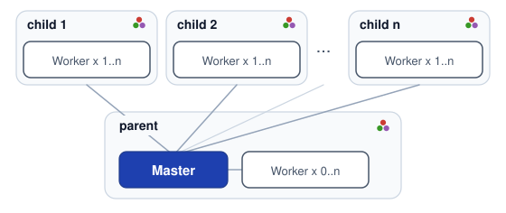
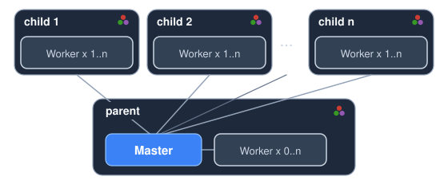

DistSSHKit.jl
DistSSHKit is a kit for running the same Julia project locally and over SSH, then collecting the results. It makes SSH-distributed runs easier and more uniform, which helps keep those runs reproducible. It uses Distributed.jl processes, not threads. Supported on macOS, Linux, and WSL2 Ubuntu (not native Windows).
Even small labs and individuals often have a few high-performance machines or workstations. DistSSHKit helps you use that hardware as a small set of compute nodes. If jobs should wait in line on those nodes, DistSSHQueue.jl is on General (pkg> add DistSSHQueue); DistSSHKit still does each run.
What is DistSSHKit?
Two ways to run a script:
- Same script on each machine (
go) — each host runs your.jlfrom start to finish. No rewrite needed. Prefer this when every run is already a complete job. - One machine coordinates (
drive) — your main Julia process stays in charge and hands pieces of the work to the others (Distributed.jl).
Around that, the kit handles remote project setup, sync, and collecting outputs. Use it from the terminal or from Julia code / notebooks.
How you call it is a separate choice:
- Julia API —
setup!for remotes,go!/drive!to run, orpipeline!for optional sync →size!→drive!→ collect (notsetup!; rsync there does not instantiate) - CLI —
julia --project=. -m DistSSHKit go …/drive …(andsetup,demo, …) distsshkit(experimental) — afterpkg> app add DistSSHKit, adistsshkitcommand on the terminal. Same flags as-m, but always the Apps copy, not--project=.. Fine forgo/setup/demo; keepdriveandsizeonjulia --project=. -m DistSSHKit. When to use it: User Guide.
All of these need Julia 1.12+ (Requirements).
Same host tokens for go / drive / size (parent:2, child:user@host:1). setup uses the SSH name with no prefix. Details: API, User Guide.
Installation
From the Julia REPL, type ] to enter the Pkg REPL mode and run:
pkg> add DistSSHKitOr, equivalently, via the Pkg API:
julia> import Pkg; Pkg.add("DistSSHKit")Optional distsshkit command (1.12+, experimental): User Guide.
Also needs ssh, rsync, and git (git deploy only); pkg> add does not install them. Requirements.
Basic terms
- Host — a machine. Here you specify it as a host token like
parentorchild:user@hostname. - Process — one running
julia. Each process has its own memory and runs independently at the OS level. (this kit launches multiplejuliaprocesses, even on a single machine, to run work in parallel — built on Distributed.jl) - Master — the process on the kit parent that plans slots (
go) or hands work to workers (drive) and collects results. The kit parent is the machine that started that process. - Worker — a process that receives work from the master and runs it.
Example: when you run go / drive on your own machine, that machine is the kit parent. Each machine can run several workers (the kit parent may run none), and you can add as many remote machines as you like.


The diagram is drive. One master on the kit parent, workers on each host. go uses the same host tokens, but there is no master/worker: each host runs the script on its own.
parent # kit parent
parent:2 # two on the kit parent
child:user@hostname # SSH child (user@host, IP, or Host alias)
child:user@hostname:4 # four on that childThere's no limit on the number of SSH hosts — more hosts just means more time spent on SSH connections and deployment, so it's best to start with a few and scale up. Each SSH host needs:
- Passwordless SSH from the kit parent
- Julia with the same major.minor version as the kit parent (
setup --checkverifies this)
Details: Requirements.
Next
Start at Requirements, then Prepare (remotes) and the bundled Demo.
Later: setup, go, drive, and the rest of the User Guide; or the API to embed from Julia.
Contributing
Bugs and feature requests: Issues. Questions and ideas: Discussions. See CONTRIBUTING.md for how to contribute.
License
Source code is MIT. The Julia dots in the docs logo and topology diagram are Copyright (c) 2012-2022 Stefan Karpinski, CC BY-NC-SA 4.0. DistSSHKit adapts them. julia-logo-graphics.